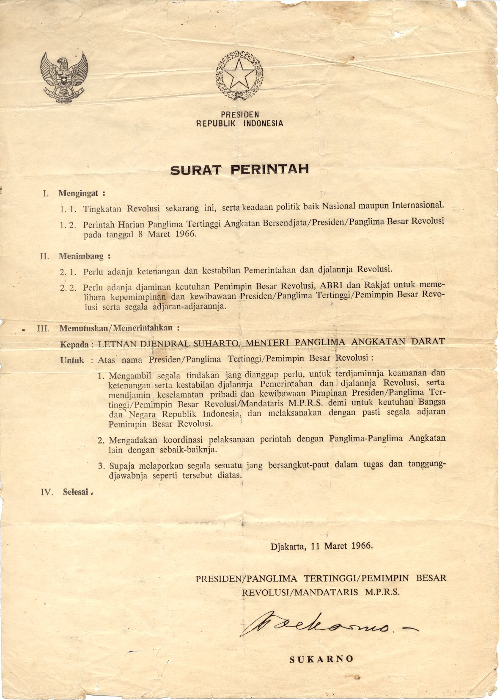
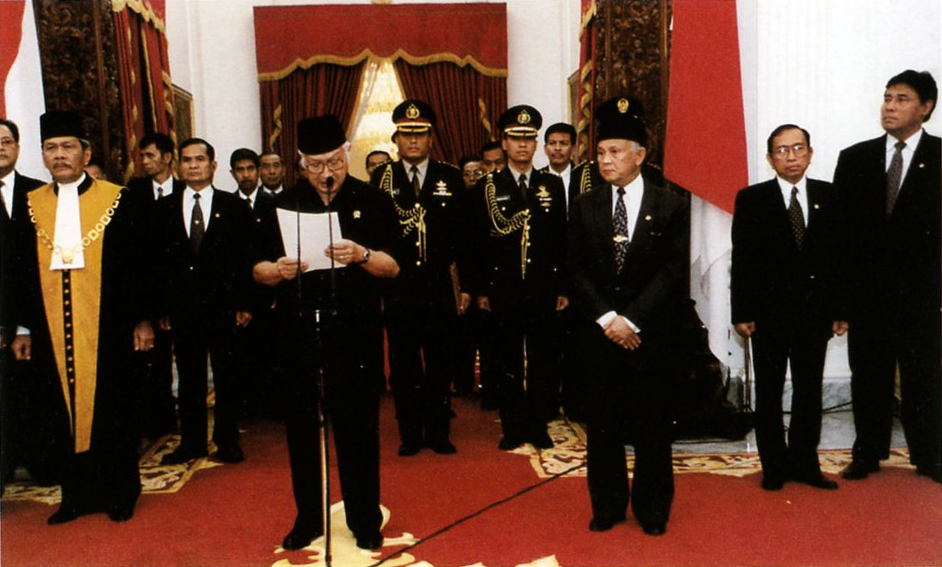

3.1.1 Penumpasan G30S/PKI
Operasi penumpasan diutamakan ke daerah yang dikuasai PKI. Operasi berikutnya ke daerah bandara Halim Perdanakusumah dan berhasil direbut kembali pada 2 Oktober 1965. Pada proses penumpasan, tokoh-tokoh PKI melarikan diri ketika kudeta yang dilakukan tidak mendapat dukungan rakyat dan angkatan bersenjata.
Pada 3 Oktober 1965, ditemukan jenazah perwira AD di Kampung Lubang Buaya. Yang dilanjutkan dengan pemakaman di Taman Makam Pahlawan Kalibata. Para perwira AD mendapatkan tanda penghargaan sebagai Pahlawan Revolusi.
Penumpasan pererbutan kekuasaan di JaTeng dipimpin Pangdam VII/Diponegoro, Bridgen Suryosumpeno. Ada juga operasi militer yang berhasil menangkap dan menembak tokoh G30S/PKI. Yaitu, Operasi Trisula di Blitar Selatan dan Operasi Kikis di perbatasan Jawa Tengah dan Timur
Tokoh PKI yang ditangkap disidangkan di Mahkamah Militer Luar Biasa (Mahmilub) dan mendapat hukuman berat.
3.1.2 Kesatuan Aksi Perintis Lahirnya Orde Baru
Presiden Soekarno tidak ingin menindaklanjuti aksi PKI. Maka, rakyat menindaklanjutinya sendiri dengan membunuh tokoh-tokoh PKI. Karena peristiwa tersebut, PKI membubarkan diri dan pemimpin PKI menyerahkan diri.
Mahasiswa membentuk KAMI (Kesatuan Aksi Mahasiswa Indonesia) pada 25 Oktober 1965 untuk menanggungjawabkan PKI. Mereka mengajukan tuntutan yang disebut Tritura yang berisi:
- Bubarkan PKI
- Bersihkan kabinet dari unsur G30S/PKI
- Turunkan harga
3.1.3 Surat Perintah Sebelas Maret dan Tindak Lanjutnya

Pada 11 Maret 1966, diselenggarakan sidang pleno Kabinet Dwikora. Presiden memutuskan meninggalkan sidang menuju Istana Bogor karena mengkhawatirkan keselamatan.
Setelah sidang ditutup, 3 perwira tinggi ABRI menemui presiden di Istana Bogor. Mereka mendiskusikan situasi negara, dan akhirnya Soekarno menyetujui untuk memberi surat perintah kepada Letjen Soeharto.
Dikirimkanlah Surat Perintah 11 Maret (Supersemar) yang berisi Soeharto menandatangani keputusan presiden yang menyatakan pembubarannya PKI. Maka, diselenggarakan Sidang Istimewa MPRS dimana disebut bahwa Soekarno tidak memenuhi tanggungjawab khususnya dalam menghadapi G30S/PKI maka MPRS mengeluarkan Ketetapan No. XXXIII/MPRS/1967 dimana tertulis pencabutan kekuasaan pemerintah negara dari Presiden Soekarno dan pengangkatan Jenderal Soeharto sebagai presiden RI.
3.1.4 Perkembangan Politik pada Masa Orde Baru
- Indonesia Kembali Menjadi Anggota PBB
- 28 September 1950 Indonesia menjadi negara ke-60 yang masuk kedalam PBB. PBB menyelesaikan pertikaian Indo-Belanda, menyelesaikan pengembalian Irian Barat, serta memberikan banyak bantuan di berbagai bidang.
- Indonesia sempat keluar pada 7 Januari 1965 karena mengusulkan Malaysia tidak diterima sebagai anggota akan tetapi tetap diterima.
- Karena keputusan tersebut, Indonesia dikucilkan dan yang rugi akhirnya hanyalah Indonesia.
- Akhirnya pada 28 September 1966, Indonesia bergabung kembali dan masih diterima oleh negara lain.
- Normalisasi Hubungan dengan Malaysia
- Tindakan memusuhi Malaysia merugikan kedua pihak, maka, pemerintah Orde Baru melakukan normalisasi hubungan.
- Dimulai ketika perundingan di Bangkok pada 29 Mei - 1 Juni 1966 ketika Indonesia yang diwakili Adam Malik bersama Malaysia yang diwakili Tun Abdul Razak menghasilkan Persetujuan Bangkok yang meliputi:
- Rakyat Sabah dan Serawak menegaskan keputusan mengenai kedudukan mereka di Malaysia
- Indonesia-Malaysia menyetujui pemulihan hubungan diplomatik
- Tindakan permusuhan harus dihentikan
- Indonesia Menjadi Anggota ASEAN
- Dimulai dari perkumpulan negara Asia Tenggara di Bangkok pada 8 Agustus 1967. Mereka menandatangani deklarasi pembentukannya ASEAN.
- Masuknya ASEAN memberi manfaat Indonesia sebagai berikut:
- Persahabatan erat dengan negara anggota
- Melancarkan proses pembangunan nasional
- Saling membantu negara anggota yang krisis ekonomi dan politik
- Meningkatkan stabilitas negara dan kawasan Asia Tenggara

Logo ASEAN. - Pemerintah Orde Baru mewujudkan sistem demokrasi Pancasila dimana diselenggarakan pemilihan umum yang didasarkan asas Luber (Langsung, Umum, Bebas, dan Rahasia)
- Pemilu pertama kali diselanggarakan pada 3 Juli 1971 diikuti oleh Golkar, NU, dll.
- Pemilu kedua terjadi pada 2 Mei 1977 dimana diseserhanakan menjadi 3 partai yakni, PPP, Golkar, dan PDI
- Perkembangan Ekonomi pada Masa Orde Baru
- Indonesia melakukan pembangunan melalui dana pinjaman luar negeri dari IMF, World Bank, dan IGGI
- Indonesia juga aktif dalam PBB dan memiliki program pembangunan. (PJP, Pelita, dan Pembangunan Tahunan)
- Keberhasilan pembangunan nasional digambarkan pemerintah Orde Baru seperti naiknya produksi dan jasa di segala bidang, naiknya pendapatan dan kemakmuran, meningkatnya kemampuan negara dalam menghimpun dana, bertambah berbagai sarana. hal tersebut sukses sampai 1997.
- Akan tetapi, ekonomi di masa Orde Baru mengalami penurunan hingga terimbas krisis moneter.
- Memasuki tahun aggaran 1998-1999, pengaruh krisis moneter meluas yang berdampak meningkatnya angka pengangguran, daya beli, dan kualitas hidup.
- Penurunan inilah yang menandakan akhir kuasa pemerintahan Orde Baru
- Proses Jatuhnya Pemerintahan Orde Baru
- Karena keberhasilan di Indonesia, MPR memberikan predikat pada Soeharto sebagai "Bapak Pembangunan Nasional"
- Akan tetapi, saat Juli 1997, Indonesia dilanda krisis moneter.
- IMF memberikan paket bantuan keuangan kepada pemerintah Indonesia.
- Pada 10 Maret 1998, Soeharto terpilih kembali sebagai Presiden RI. Rakyat kecewa dan protes.
- Muncullah tuntutan yang diajukan mahasiswa untuk memulihkan kondisi ekonomi dan politik Indonesia yang dikenal sebagai "Tuntutan Gerakan Reformasi" berisi:
- Bubarkan Orde Baru dan Golkar
- Hapuskan Dwifungsi ABRI
- Hapuskan KKN
- Tegakkan supremasi hukum, HAM, dan demokrasi
- Tokoh yang dianggap sangat berpengaruh pada era reformasi adalah Amien Rais.
- Dalam menganggapi reformasi, Soeharto menyatakan bahwa reformasi politik baru bisa dimulai 2003 ke atas.
- Hingga akhirnya, 1 Mei 1998 seorang mahasiswa Universitas Sanata Dharma Yogyakarta, Moses Gatotkaca tewas d UGM Yogyakarta.
- Soeharto terus menerus meyakini stabilitas politik dan ekonomi, akan tetapi kondisi tidak sesuai dengan katanya.
- Terjadilah Tragedi Trisakti, dimana 4 mahasiswa Universitas Trisakti meninggal pada 12 Mei 1998.
- Rakyat berbondong-bondong berdemo didepan gedung MPR/DPR
- Pada 19 Mei 1998, Soeharto bertemu dengan 9 tokoh masyarakat. Soeharto mengajukan rencana-rencana yang tidak didukung oleh tokoh tersebut.
- Aksi gerakan mahasiswa dari berbagai universitas semakin besar dan mereka terus-menerus berdatangan.
- Pada 21 Mei 1998, di Gedung Istana Merdeka, Soeharto mengunduurkan diri dari jabatan presiden. Berakhirlah masa kekuasaan Orde Baru yang berlangsung selama 32 tahun.

Soeharto mengundurkan diri.